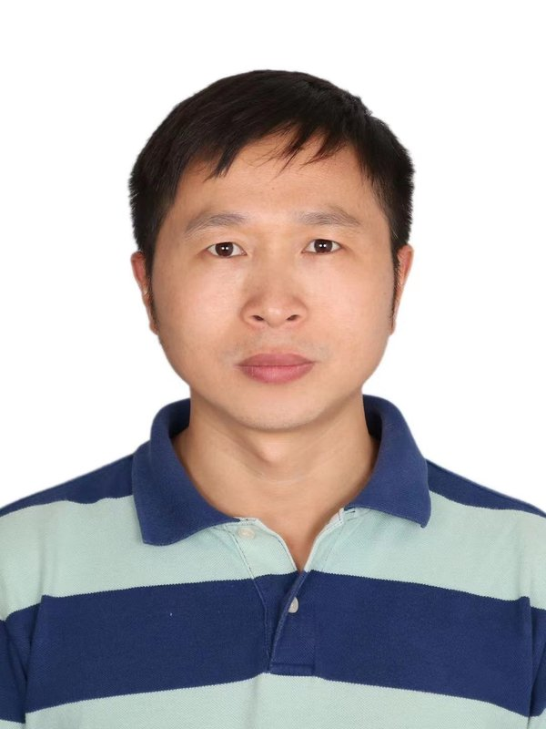

Chief Scientist for Computer Vision
Baidu
王井东博士是百度计算机视觉首席科学家，中国工程院院士、IEEE Fellow、IAPR Fellow。在加入百度之前，他于2007年9月至2021年8月在微软亚洲研究院担任首席研究员。他的研究兴趣包括计算机视觉、深度学习、多媒体搜索和大型模型。他的代表性工作包括：用于通用视觉识别的高分辨率网络(HRNet)、基于Transformer查询的对象上下文表示(OCRNet)用于语义分割、判别性区域特征集成(DRFI)用于显著性检测、邻域图搜索(NGS, SPTAG)用于向量搜索等。
Dr. Jingdong Wang is Chief Scientist for computer vision with Baidu, Fellow of CAE, IEEE and IAPR. Before joining Baidu, he was a Senior Principal Researcher at Microsoft Research Asia from September 2007 to August 2021. His areas of interest include computer vision, deep learning, multimedia search and large models. His representative works include: high-resolution network (HRNet) for generic visual recognition, transformer query-based object-contextual representations (OCRNet) for semantic segmentation, discriminative regional feature integration (DRFI) for saliency detection, and neighborhood graph search (NGS, SPTAG) for vector search.